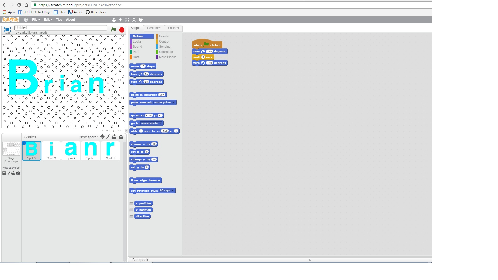
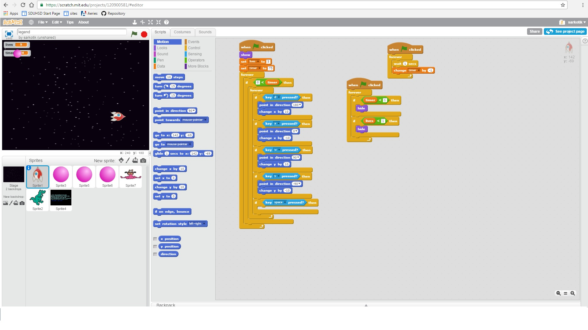
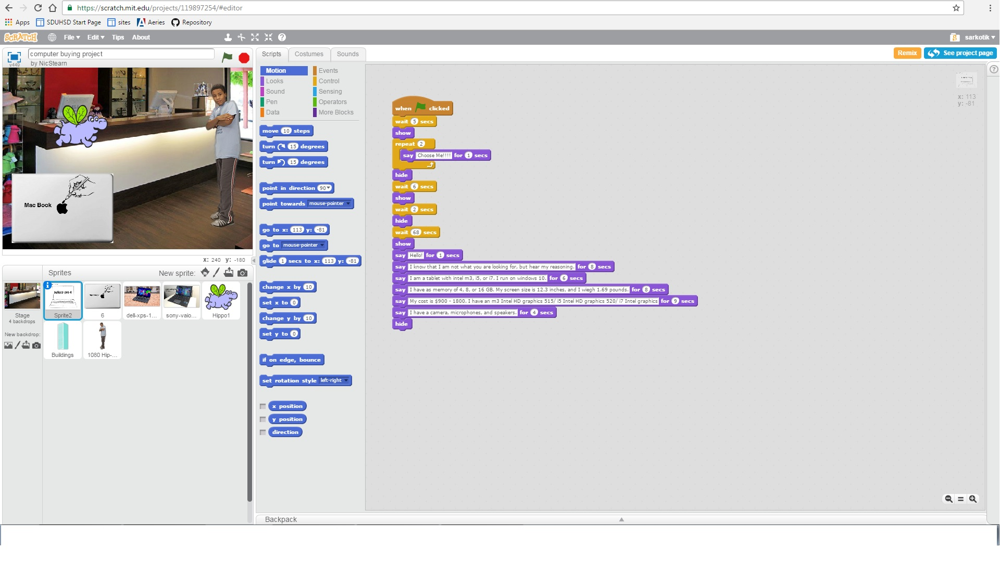

Scratch Page
Name Assignment

Description
Use scratch to design and create a program that shows my name. The requirements were to add a sprite for each letter in my name and give them three behaviors. When the green flag was clicked, it would start, and for extra credit, I added a function to reset the scene to the beginning each time the green flag was clicked.
Concepts
Computer Buying Project

Description
The computer buying project was a great experience and taught me a lot about computers that I previously did not know. The requirements were to interview someone, and then find a computer for them based off of what they want. We then proceeded to present this in a presentation that was made in Scratch. An animation was done for our project, and we ended up choosing the right computer for the person chose.
Concepts
Final Scratch Project

Description
For this project, we made a game or story depending on what we wanted to do. I chose to make a game, and the requirements were to let the player know if they win, keep score, have a timer, have a help screen, reset the game when the green flag is clicked, having the game stop when it's over, and having multiple levels. I had a lot of fun making this project and learned a lot from it.